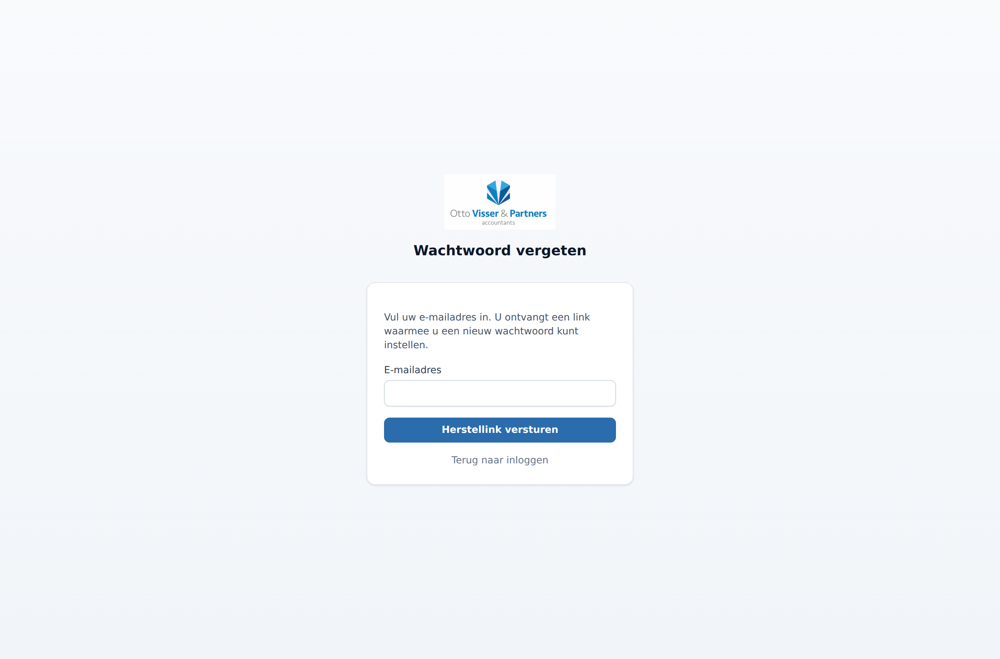

Met het Ondertekenportaal laat u cliënten documenten volledig online ondertekenen: veilig, snel en zonder dat de cliënt iets hoeft te installeren of een account nodig heeft.
In het kort werkt het zo:
U importeert een of meer documenten (PDF of Word).
Het portaal herkent automatisch wat voor stuk het is en vult titel en begeleidende tekst voor.
U geeft aan waar getekend moet worden en in welke volgorde.
De cliënt krijgt een uitnodiging per e-mail, bevestigt zijn identiteit met een verificatiecode en tekent in de browser.
Werkt u met een beroepscertificaat? Dan zet u daarna uw eigen handtekening op persoonlijke titel (hoofdstuk 10).
Iedere partij ontvangt de definitieve, verzegelde PDF met een auditspoor.
Twee soorten ondertekenaars. Een kantoorondertekenaar (u of een collega) tekent ingelogd in het portaal. Een cliënt tekent via een beveiligde link in de e-mail.
Hoofdstuk 2
Inloggen, tweefactor en wachtwoord
U logt in met uw e-mailadres, wachtwoord en een code uit uw authenticator-app. Zo komt niemand met alleen een wachtwoord binnen.
Het inlogscherm, met onderaan de link "Wachtwoord vergeten?"
Herstelcodes (belangrijk)
Bij het instellen van tweefactor krijgt u eenmalig een set herstelcodes. Bewaar die op een veilige plek: raakt u uw telefoon kwijt, dan logt u met zo'n code toch in. In Instellingen ziet u hoeveel codes u nog heeft en kunt u een nieuwe set genereren.
Wachtwoord vergeten
Klik op Wachtwoord vergeten? op het inlogscherm en vul uw e-mailadres in. U ontvangt een e-mail met een eenmalige link waarmee u een nieuw wachtwoord instelt. De link is 60 minuten geldig.

Een nieuw wachtwoord aanvragen.
Uw beheerder kan uw wachtwoord of tweefactor ook resetten als u er helemaal niet meer in komt (zie hoofdstuk 14).
Hoofdstuk 3
Het dashboard
Het dashboard toont al uw dossiers en in één oogopslag de status en de vervaldatum.
Filter met de knoppen op status (concept, verzonden, gedeeltelijk, ondertekend).
Zoek op titel of op de naam van een ondertekenaar.
De kolom Verloopt laat zien hoeveel tijd een openstaand verzoek nog heeft; rood betekent verlopen, oranje betekent binnen drie dagen.
Klik op een titel om het dossier te openen.
Het dashboard met filters, zoekbalk en de kolom "Verloopt".
Aandacht nodig
De knop Aandacht nodig toont in één klik alle openstaande verzoeken die (bijna) verlopen, zodat u weet waar een herinnering op zijn plaats is.
Alleen de verzoeken die aandacht vragen.
Meldingen bovenaan
Boven de lijst verschijnen gekleurde balken zodra er iets uw aandacht vraagt. U hoeft er dus niet naar te zoeken:
Rood – "uitnodiging komt niet aan". De e-mail is niet bezorgd, meestal door een typefout in het adres. Zie hoofdstuk 11.
Blauw – "Wacht op uw handtekening". Alle partijen hebben getekend; het stuk wacht nog op uw handtekening met beroepscertificaat. Zie hoofdstuk 10.
Oranje – "wacht op verzegeling". Zeldzaam. Het stuk is ondertekend, maar de digitale verzegeling is nog niet gelukt (bijvoorbeeld door een storing bij de certificaatdienst). Het portaal probeert het automatisch opnieuw; er gaat pas een voltooiingsmail uit als het gelukt is. U hoeft niets te doen.
Hoofdstuk 4
Cliënten beheren en importeren
In de cliëntendatabase bewaart u naam, e-mail en telefoon. Bij het versturen vult het portaal die gegevens automatisch in.
Overzicht van cliënten.
Per cliënt legt u een voornaam vast (voor een nette aanhef in de e-mails) en kiest u of verifiëren via e-mail of sms gaat.
Een cliënt bewerken, met het veld Voornaam en de verificatiemethode.
In bulk importeren
Heeft u veel cliënten? Ga naar Cliënten → Importeren, download het voorbeeldbestand, vul uw gegevens in dezelfde kolommen in en upload het (.csv of .xlsx). Bestaande cliënten (zelfde e-mailadres) worden bijgewerkt in plaats van dubbel toegevoegd.
Importeren met een voorbeeldbestand.
Hoofdstuk 5
Een verzoek aanmaken met automatische herkenning
Zodra u een document kiest, herkent het portaal het type en het boekjaar en vult het de titel en het begeleidend bericht automatisch voor.
Ga naar Nieuw dossier en kies een bestand (PDF of Word; Word wordt automatisch omgezet).
Het portaal herkent bijvoorbeeld een jaarrekening en vult titel en tekst in. U kunt alles nog aanpassen.
Herkend als "Jaarrekening (2024)"; titel en bericht zijn vast ingevuld.
Meerdere documenten samen
Jaarrekening, notulen en bevestiging gaan vrijwel altijd samen. Voeg ze met Nog een document toevoegen toe aan hetzelfde verzoek: het portaal voegt titel en bericht dan automatisch samen tot één verzoek dat alle stukken benoemt. Elk document houdt zijn eigen titel; de cliënt tekent ze na één keer inloggen achter elkaar.
Drie documenten in één verzoek; titel en bericht zijn samengevoegd.
Invulvelden zoals {voornaam_klant} worden bij het verzenden per ontvanger ingevuld. De standaardteksten past u aan onder Berichtsjablonen (hoofdstuk 13).
Hoofdstuk 6
Velden plaatsen en de ondertekenvolgorde
Hier bepaalt u wie tekent, in welke volgorde, en waar op de pagina de handtekening komt.
Kies de ondertekenvolgorde: Eén voor één (de volgende komt pas aan de beurt als de vorige heeft getekend) of Iedereen tegelijk.
Voeg ondertekenaars toe: een Kantoor-collega of een Cliënt uit uw database.
Bij meerdere documenten wisselt u bovenaan tussen de tabbladen per document.
Klik op de pagina om een tekenvak te plaatsen voor de geselecteerde ondertekenaar.
Klik op Opslaan en naar overzicht.
De volgorde instellen, ondertekenaars kiezen en tekenvakken plaatsen.
Hoofdstuk 7
Versturen en opvolgen
Vanuit het dossieroverzicht verstuurt u het verzoek en volgt u de voortgang.
De tijdlijn toont elke stap: aangemaakt, verzonden, geopend en ondertekend, met datum en tijd.
Bij Ondertekenaars ziet u wie al getekend heeft en bij wie het nu "aan de beurt" is.
Met Herinnering sturen geeft u de cliënt een nette reminder; met Intrekken stopt u het verzoek.
Onder Documenten downloadt u op elk moment de actuele versie.
Dossierdetail: acties, documenten, ondertekenaars en de tijdlijn.
Hoofdstuk 8
Zelf ondertekenen vanuit kantoor
Moet u (of een collega) zelf eerst tekenen? Dat doet u ingelogd, zonder e-mail, via Te ondertekenen.
Open Te ondertekenen in het menu; hier staan de dossiers die op uw handtekening wachten.
Open het dossier, controleer het en plaats uw handtekening (die u in Instellingen heeft ingesteld).
Bij een "één voor één"-volgorde krijgt de volgende ondertekenaar daarna automatisch bericht.
De wachtrij met dossiers die op uw handtekening wachten.
Hoofdstuk 9
Zo tekent de cliënt
De cliënt heeft geen account nodig. Via de link in de e-mail komt hij op een beveiligde pagina.
De cliënt opent de link en vraagt een verificatiecode aan (per e-mail of sms).
Na het invoeren van de code worden de documenten zichtbaar.
De cliënt tekent per document in het vak Teken hier, zet onderaan zijn handtekening en klikt op Ondertekenen.
Stap 1: de cliënt bevestigt zijn identiteit met een verificatiecode.Stap 2: alle documenten met tekenvakken en het handtekeningveld onderaan.
Hoofdstuk 10
Ondertekenen met uw beroepscertificaat
Bent u accountant (AA of RA) met een beroepscertificaat, dan zet u uw handtekening op persoonlijke titel — met uw beroepstitel erbij. U bevestigt daarbij één keer met uw pincode, ook als het om een stapel stukken gaat.
Wanneer komt dit langs?
Zodra alle partijen hebben getekend, komt het dossier op “Wacht op uw handtekening”. U ziet dat op het dashboard en boven de lijst bij Te ondertekenen. Zolang dit wacht gaat er geen voltooiingsmail naar de cliënt.
De blauwe balk laat zien hoeveel stukken op uw handtekening wachten.
Waarom dit een aparte stap is
Zodra er een digitale handtekening in een document zit, mag er niets meer aan veranderen. Het ondertekencertificaat achterin moet er dus eerst op, en dat kan pas als iedereen klaar is. Daarom tekent u niet tijdens het versturen, maar aan het eind.
Zo werkt het
Klik op de blauwe balk of ga naar Te ondertekenen → Ondertekenen met beroepscertificaat.
Vink aan wat u wilt ondertekenen. Alles staat standaard aangevinkt; u kunt stukken uitzetten die u nog wilt nakijken.
Klik op Ondertekenen. U gaat naar uw certificaatprovider.
Bevestig daar één keer met uw pincode in de app.
U komt terug in het portaal. De stukken zijn ondertekend, afgerond en verstuurd.
Meerdere stukken selecteren en in één keer bevestigen.
Handig om te weten. U kunt tot 50 stukken onder één bevestiging meenemen. Werk dus liever één keer per dag een lijstje weg dan elk stuk apart — dat scheelt evenveel keer een pincode.
Gaat er iets mis? De bevestiging is maar een paar minuten geldig. Duurt het te lang of breekt u af, dan is er niets ondertekend en begint u gewoon opnieuw. Er blijft nooit een half ondertekende stapel achter.
Staat gekwalificeerd ondertekenen niet aan voor uw account, of gebruikt uw kantoor geen beroepscertificaat, dan slaat het portaal deze stap over en wordt een stuk direct afgerond.
Hoofdstuk 11
Als een e-mail niet aankomt
Het portaal ziet of een uitnodiging daadwerkelijk is bezorgd. Een verzoek kan dus niet stil blijven liggen doordat het e-mailadres fout is.
Wat u ziet
Komt een uitnodiging niet aan, dan verschijnt bovenaan het dashboard een rode melding met de naam, het adres en de reden. U krijgt daarnaast een e-mail.
Bovenaan: een uitnodiging die niet is bezorgd, met de reden erbij.
Wat u doet
Open het dossier via de link in de melding.
Corrigeer het e-mailadres bij de cliënt.
Verstuur het verzoek opnieuw.
Herinneren werkt hier niet. Naar een adres dat niet bestaat kunt u geen herinnering sturen; het portaal blokkeert dat bewust. Blijven mailen naar foute adressen schaadt namelijk de bezorging van al uw andere mail. Corrigeer eerst het adres.
Tijdelijke problemen
Is de mailbox van de cliënt bijvoorbeeld vol, dan probeert het portaal het na een uur automatisch nog één keer. Lukt het dan nog niet, dan krijgt u bericht.
In de tijdlijn van het dossier ziet u per stap wat er met de mail is gebeurd: verzonden, afgeleverd, of niet bezorgd. Of de cliënt de mail heeft geopend ziet u soms ook, maar dat is een indicatie en geen bewijs — daarom staat het niet op het ondertekencertificaat.
Hoofdstuk 12
Een document controleren op echtheid
Wil een bank, notaris of cliënt weten of een document echt van u komt en onveranderd is? Dat kan iedereen zelf nagaan, zonder account.
Via het portaal
Ga naar /valideren op het adres van het portaal.
Upload het document.
U ziet of het zegel geldig is, wie het heeft gezet, wanneer, en of er na ondertekening nog iets is gewijzigd.
De controlepagina. Het bestand wordt alleen gecontroleerd en niet opgeslagen.
Via Adobe Reader
Wie het document in Adobe Acrobat Reader opent, ziet bovenaan een balk met de handtekeningstatus. Klik op het handtekeningpaneel voor de details: wie ondertekende, wanneer, en of het document sindsdien is gewijzigd.
Wat de ontvanger ziet. Op de laatste pagina van elk afgerond stuk staat een ondertekencertificaat: wie heeft getekend, wanneer, vanaf welk IP-adres, wanneer de verificatiecode is gebruikt, en een controlegetal van het document. Daarmee is het hele verloop na te lopen, ook op papier.
Hoofdstuk 13
Berichtsjablonen
De standaardtitel en -tekst per documenttype bepalen wat er automatisch wordt voorgevuld. Beheerders passen ze aan onder Instellingen → Berichtsjablonen.
Per type (jaarrekening, notulen, bevestiging, akkoordverklaring IB en VPB, opdrachtbevestiging) is er een titel- en berichtsjabloon.
Gebruik invulvelden zoals {voornaam_klant}, {boekjaar} en {voornaam_afzender}.
Met één klik zet u een sjabloon terug naar de standaardtekst.
De teksten per documenttype aanpassen.
Hoofdstuk 14
Gebruikers beheren en het beroepscertificaat
Beheerders maken accounts aan voor collega's en kunnen hen helpen bij problemen.
Ga naar Gebruikers (alleen zichtbaar voor beheerders).
Maak een nieuwe medewerker aan met naam en e-mailadres; die stelt bij de eerste login zelf een wachtwoord en tweefactor in.
Kies de rol: Medewerker of Beheerder.
Per gebruiker kunt u het wachtwoord resetten en de tweefactor resetten (bij verlies van de telefoon). De gebruiker stelt het dan opnieuw in bij het inloggen.
Collega's toevoegen, rollen toekennen, en per accountant het beroepscertificaat instellen.
Beroepscertificaat per accountant
Onderaan dezelfde pagina zet u per medewerker het beroepscertificaat in. Daarmee kan die accountant op persoonlijke titel gekwalificeerd ondertekenen (hoofdstuk 10).
Titel: AA of RA. Deze titel komt bij de handtekening te staan.
NBA-nummer: optioneel, voor uw eigen administratie.
Credential-id: de verwijzing die u van de certificaatprovider krijgt.
Inschakelen: zet het vinkje aan om gekwalificeerd ondertekenen voor deze accountant te activeren.
Veilig opgezet. Het portaal bewaart alleen de verwijzing, nooit uw pincode of het certificaat zelf. Dat blijft bij de provider, en u bevestigt elke ondertekening zelf in hun app.
Persoonsgebonden. Een certificaat hoort bij precies één accountant en mag nooit worden gedeeld; het portaal staat dat ook niet toe. Eindigt de inschrijving in het NBA-register of wordt die geschorst, dan trekt de provider het certificaat in. Het portaal merkt dat, zet gekwalificeerd ondertekenen voor die medewerker automatisch uit en waarschuwt de beheerders.
Hoofdstuk 15
Beveiliging in het kort
Het portaal is ontworpen met beveiliging in meerdere lagen, zodat gevoelige cliëntgegevens beschermd blijven.
In Instellingen beheert u uw wachtwoord, tweefactor (met herstelcodes) en uw handtekening.
Versleuteld opgeslagen. Documenten worden met AES-256 versleuteld voordat ze worden opgeslagen.
Beveiligde verbinding. Al het verkeer loopt over HTTPS.
Tweefactor voor kantoor. Inloggen vereist wachtwoord én een code uit uw app; met herstelcodes raakt u nooit buitengesloten.
Identiteitscheck voor cliënten. De cliënt tekent pas na een eenmalige verificatiecode per e-mail of sms.
Eenmalige links. Ondertekenlinks en herstellinks zijn persoonlijk, kortlevend en na gebruik ongeldig.
Auditspoor. Elke stap wordt vastgelegd met tijd en IP-adres, in een spoor dat niet te wijzigen of te verwijderen is. Ook de tekst die de cliënt boven de ondertekenknop las, wordt woordelijk bewaard.
Digitale verzegeling. Het afgeronde document krijgt een digitale handtekening met een tijdstempel van een onafhankelijke dienst. Daarmee kan iedere ontvanger zelf vaststellen dat het stuk onveranderd is — in Adobe Reader of via de controlepagina (hoofdstuk 12).
Controle bij downloaden. Bij elke download controleert het portaal of het bestand nog overeenkomt met wat er is verzegeld. Wijkt het af, dan wordt de download geblokkeerd.
Bezorging van e-mail. Het portaal ziet of een uitnodiging is afgeleverd en waarschuwt als dat niet zo is (hoofdstuk 11).
Bewaartermijn. Afgeronde dossiers worden zeven jaar bewaard en daarna automatisch opgeruimd — document en bewijsspoor altijd samen.
Tips. Deel uw wachtwoord, tweefactor, herstelcodes en pincode nooit. Controleer altijd het e-mailadres van de cliënt voor u verstuurt; dat adres bepaalt wie kan tekenen. Trek een verzoek in zodra het niet meer nodig is.
Wat u tegen een cliënt kunt zeggen
Krijgt u de vraag of online ondertekenen wel rechtsgeldig is: een elektronische handtekening heeft in Nederland dezelfde rechtsgevolgen als een handtekening op papier, mits de methode betrouwbaar genoeg is voor het doel. Het portaal legt daarvoor de identiteit van de ondertekenaar vast met een verificatiecode naar een door u bevestigd e-mailadres, bewaart het volledige verloop, en verzegelt het eindresultaat zodat wijziging achteraf aantoonbaar is.